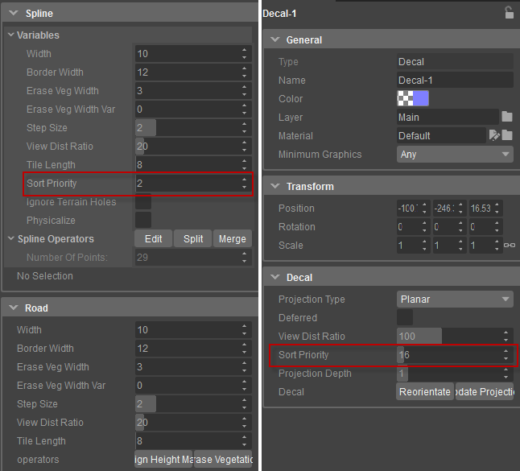
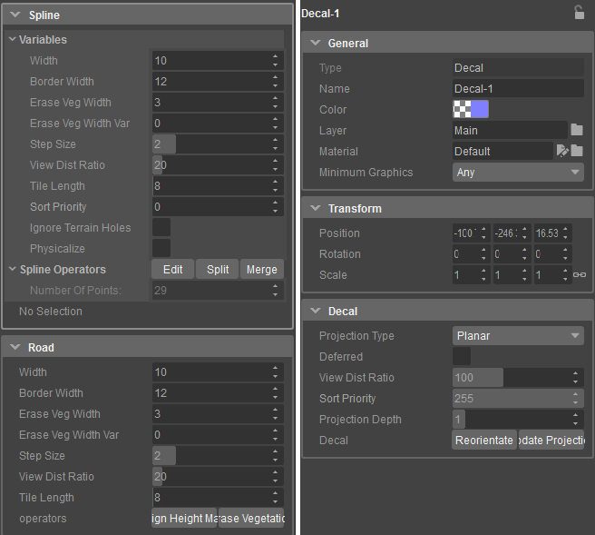
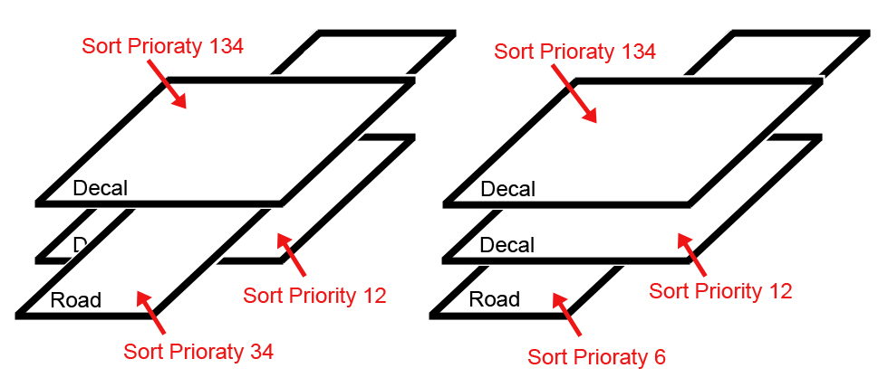
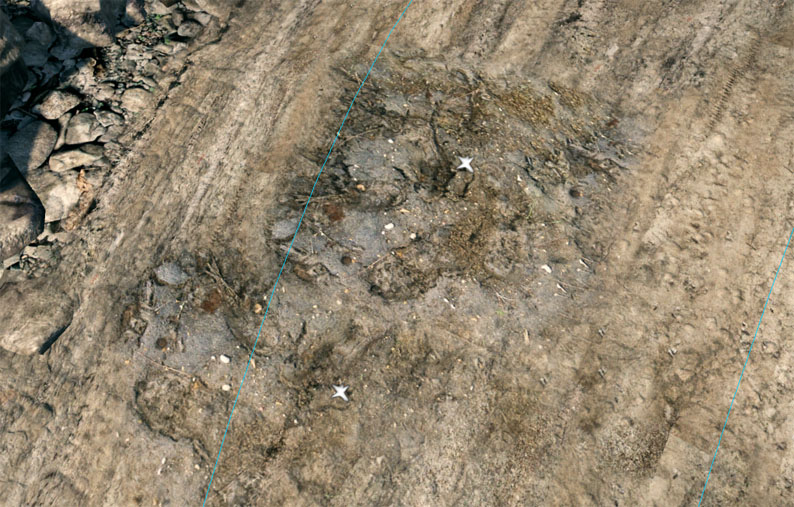

Обзор
Любую дорогу и надпись можно настроить с использованием приоритета сортировки. Эта функция дает пользователю возможность решать, в каком порядке дороги и надписи отображаются в движке.

Приоритет можно изменить от 0 до максимум 255.

Движок использует эти числа как страницы в книге. Меньшее число соответствует более низкой странице и будет отображаться на странице с более высоким номером. Наибольшее число всегда находится сверху.

В ситуации, когда множество дорог и надписей пересекают друг друга, вам необходимо убедиться, что объекты имеют разные приоритеты сортировки.

Если вы сохраните значение на тех же цифрах, движок пропустит информацию о том, какой объект должен отображаться сверху, и ресурсы начнут мерцать в игре.